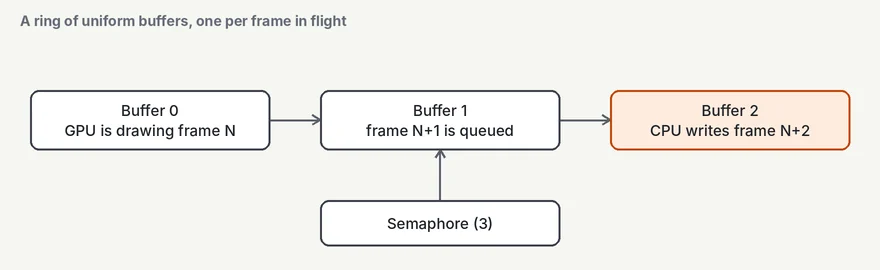

Metal avanzato
Dati avanzati#
Buffer e texture sono stati finora scatole nere create con una chiamata.
Questo capitolo le apre: dove vive la loro memoria, come aggiornarla in modo efficiente a ogni frame e come copiare dati sulla GPU.
I buffer sono soltanto memoria#
Un MTLBuffer è un blocco di byte senza tipo.
Metal non gli attribuisce alcun significato.
Lo stesso buffer può contenere vertici nella prima metà e uniform nella seconda, e quale parte usare lo dici con il parametro offset quando lo colleghi.
Crea un buffer vuoto e riempilo dopo:
let buffer = device.makeBuffer(length: 1024, options: .storageModeShared)!
MTL::Buffer* buffer = device->newBuffer(1024, MTL::ResourceStorageModeShared);
buffer.contents() restituisce un puntatore grezzo alla memoria.
Scrivere attraverso di esso è il modo più veloce di aggiornare i dati:
let pointer = buffer.contents().bindMemory(to: Uniforms.self, capacity: 1)
pointer.pointee = uniforms
Uniforms* pointer = static_cast<Uniforms*>(buffer->contents());
*pointer = uniforms;
oppure, per un array:
buffer.contents().copyMemory(from: vertices,
byteCount: MemoryLayout<Vertex>.stride * vertices.count)
std::memcpy(buffer->contents(), vertices.data(), sizeof(Vertex) * vertices.size());
Storage mode#
Lo storage mode di una risorsa dice chi può accedere alla sua memoria.
| Modo | Accesso CPU | Accesso GPU | Note |
|---|---|---|---|
.shared |
sì | sì | Una sola copia in memoria, visibile a entrambe. È il valore predefinito per i buffer su Apple silicon. |
.private |
no | sì | Solo GPU. Il migliore per i render target e per i dati statici. |
.managed |
sì | sì | Due copie sincronizzate. Ha senso solo sui Mac con GPU discreta. |
.memoryless |
no | durante un pass | Solo texture, GPU Apple. Esiste soltanto mentre un render pass è in esecuzione. |
Apple silicon ha una memoria unificata: CPU e GPU condividono la stessa RAM fisica.
Un buffer shared non viene copiato quando la GPU lo usa, quindi "caricare" dei dati non è altro che scrivere in memoria.
Regole pratiche:
- Dati che riscrivi a ogni frame:
.shared. - Texture in cui disegni e mesh statiche che non tocchi più:
.private. - Attachment di profondità o multisample che non conservi:
.memoryless.
Aggiornare gli uniform senza rischi#
setVertexBytes è comodo, ma è limitato a 4 KB per chiamata e copia i dati ogni volta.
Un renderer vero tiene gli uniform in buffer.
C'è un pericolo: la GPU lavora in ritardo rispetto alla CPU.
Se sovrascrivi un buffer per il frame N+1 mentre la GPU sta ancora disegnando il frame N, il frame N legge i dati sbagliati.
La cura consueta è un piccolo anello di buffer, uno per ogni frame in lavorazione, con un semaforo che impedisce alla CPU di andare troppo avanti:
let maxFramesInFlight = 3
let frameSemaphore = DispatchSemaphore(value: maxFramesInFlight)
var uniformBuffers: [MTLBuffer] = []
var frameIndex = 0
// init
for _ in 0..<maxFramesInFlight {
uniformBuffers.append(device.makeBuffer(length: MemoryLayout<Uniforms>.stride * maxObjects,
options: .storageModeShared)!)
}
#include <dispatch/dispatch.h>
static const int maxFramesInFlight = 3;
dispatch_semaphore_t frameSemaphore = dispatch_semaphore_create(maxFramesInFlight);
MTL::Buffer* uniformBuffers[maxFramesInFlight];
int frameIndex = 0;
// constructor
for (int i = 0; i < maxFramesInFlight; i++) {
uniformBuffers[i] = device->newBuffer(sizeof(Uniforms) * maxObjects, MTL::ResourceStorageModeShared);
}
func draw(in view: MTKView) {
frameSemaphore.wait()
frameIndex = (frameIndex + 1) % maxFramesInFlight
let uniformBuffer = uniformBuffers[frameIndex]
guard let commandBuffer = commandQueue.makeCommandBuffer() else {
frameSemaphore.signal()
return
}
commandBuffer.addCompletedHandler { [frameSemaphore] _ in
frameSemaphore.signal()
}
// Write all objects' uniforms into the buffer...
let uniformsPointer = uniformBuffer.contents().bindMemory(to: Uniforms.self, capacity: maxObjects)
for (i, object) in objects.enumerated() {
uniformsPointer[i] = object.uniforms
}
// ...then bind once and move the offset per draw.
encoder.setVertexBuffer(uniformBuffer, offset: 0, index: 1)
for i in objects.indices {
encoder.setVertexBufferOffset(MemoryLayout<Uniforms>.stride * i, index: 1)
// draw object i
}
...
}
void Renderer::draw() {
dispatch_semaphore_wait(frameSemaphore, DISPATCH_TIME_FOREVER);
frameIndex = (frameIndex + 1) % maxFramesInFlight;
MTL::Buffer* uniformBuffer = uniformBuffers[frameIndex];
MTL::CommandBuffer* commandBuffer = commandQueue->commandBuffer();
dispatch_semaphore_t semaphore = frameSemaphore;
commandBuffer->addCompletedHandler([semaphore](MTL::CommandBuffer*) {
dispatch_semaphore_signal(semaphore);
});
// Write all objects' uniforms into the buffer...
Uniforms* uniformsPointer = static_cast<Uniforms*>(uniformBuffer->contents());
for (size_t i = 0; i < objects.size(); i++) {
uniformsPointer[i] = objects[i].uniforms;
}
// ...then bind once and move the offset per draw.
encoder->setVertexBuffer(uniformBuffer, 0, 1);
for (size_t i = 0; i < objects.size(); i++) {
encoder->setVertexBufferOffset(sizeof(Uniforms) * i, 1);
// draw object i
}
// ...
}
setVertexBufferOffset costa molto meno che ricollegare un buffer.
Un solo grande buffer con un offset per oggetto è il modo in cui migliaia di draw call restano veloci.
Assicurati che ogni uscita anticipata dopo wait() segnali il semaforo, altrimenti l'app si blocca dopo tre frame.

Copiare sulla GPU: il blit encoder#
Un terzo tipo di encoder, accanto a quello di render e a quello di compute, sposta dati tra le risorse:
let blit = commandBuffer.makeBlitCommandEncoder()!
// Buffer to buffer
blit.copy(from: sourceBuffer, sourceOffset: 0,
to: destinationBuffer, destinationOffset: 0,
size: sourceBuffer.length)
// Texture to texture (same format and size)
blit.copy(from: sourceTexture, to: destinationTexture)
// Build the mipmap chain of a texture you rendered or filled yourself
blit.generateMipmaps(for: texture)
blit.endEncoding()
MTL::BlitCommandEncoder* blit = commandBuffer->blitCommandEncoder();
// Buffer to buffer
blit->copyFromBuffer(sourceBuffer, 0, destinationBuffer, 0, sourceBuffer->length());
// Texture to texture (same format and size)
blit->copyFromTexture(sourceTexture, destinationTexture);
// Build the mipmap chain of a texture you rendered or filled yourself
blit->generateMipmaps(texture);
blit->endEncoding();
Il blit encoder è anche il modo di riempire una risorsa .private: scrivi i dati in un buffer shared di appoggio e copiali dall'altra parte con un blit.
Rileggere i dati#
Per rileggere dei pixel, il risultato deve trovarsi in memoria visibile alla CPU dopo che la GPU ha finito:
let bytesPerRow = texture.width * 4
let readback = device.makeBuffer(length: bytesPerRow * texture.height, options: .storageModeShared)!
let blit = commandBuffer.makeBlitCommandEncoder()!
blit.copy(from: texture, sourceSlice: 0, sourceLevel: 0,
sourceOrigin: MTLOrigin(x: 0, y: 0, z: 0),
sourceSize: MTLSize(width: texture.width, height: texture.height, depth: 1),
to: readback, destinationOffset: 0,
destinationBytesPerRow: bytesPerRow,
destinationBytesPerImage: bytesPerRow * texture.height)
blit.endEncoding()
commandBuffer.addCompletedHandler { _ in
let pixels = readback.contents() // valid now
}
commandBuffer.commit()
NS::UInteger bytesPerRow = texture->width() * 4;
MTL::Buffer* readback = device->newBuffer(bytesPerRow * texture->height(), MTL::ResourceStorageModeShared);
MTL::BlitCommandEncoder* blit = commandBuffer->blitCommandEncoder();
blit->copyFromTexture(texture, 0, 0, // slice, level
MTL::Origin::Make(0, 0, 0),
MTL::Size::Make(texture->width(), texture->height(), 1),
readback, 0, // destination, offset
bytesPerRow,
bytesPerRow * texture->height());
blit->endEncoding();
commandBuffer->addCompletedHandler([readback](MTL::CommandBuffer*) {
void* pixels = readback->contents(); // valid now
});
commandBuffer->commit();
Non bloccare mai il ciclo di rendering con waitUntilCompleted() per avere i risultati.
Usa il completion handler.
I texture descriptor per intero#
MTLTextureDescriptor offre più di larghezza e altezza:
| Proprietà | Uso |
|---|---|
textureType |
.type2D, .type2DArray, .typeCube, .type3D, .type2DMultisample e altri. |
pixelFormat |
Disposizione e precisione dei canali. |
mipmapLevelCount |
Numero di livelli di mip. |
arrayLength |
Strati di una texture array. |
sampleCount |
Campioni per pixel nel multisampling. |
usage |
.shaderRead, .shaderWrite, .renderTarget, .pixelFormatView. Dichiara solo ciò che ti serve; permette a Metal di ottimizzare. |
storageMode |
Come sopra. |
Le texture array impilano in una sola texture molte immagini della stessa dimensione, che nello shader si indicizzano per strato con texture2d_array<float>.
Sostituiscono gli atlas di texture senza i problemi di sbavatura.
Esercizi#
- Converti la scena dei dieci cubi da
setVertexBytesallo schema con l'anello di buffer.Mostra la soluzione
Alloca tre buffer, ognuno abbastanza grande per dieci
Uniforms.
A ogni frame aspetta il semaforo, scegli il buffer successivo, scrivi le dieci struct attraversocontents(), collega il buffer una volta sola consetVertexBufferall'indice 1, e prima di ogni draw call chiamasetVertexBufferOffset(stride * i, index: 1).
Segnala il semaforo nel completion handler del command buffer. - Disegna la scena in una texture, rileggila e salvala come PNG con Core Graphics.
Mostra la soluzione
Copia la texture con un blit in un buffer shared, come mostrato sopra.
Nel completion handler avvolgi i byte in unCGContext(8 bit per componente, 4 byte per pixel, premoltiplicato, conbyteOrder32Littleper una texture BGRA), chiamamakeImage()e scrivila conCGImageDestinationusando il tipo PNG.
Fai la scrittura del file fuori dal thread di rendering.